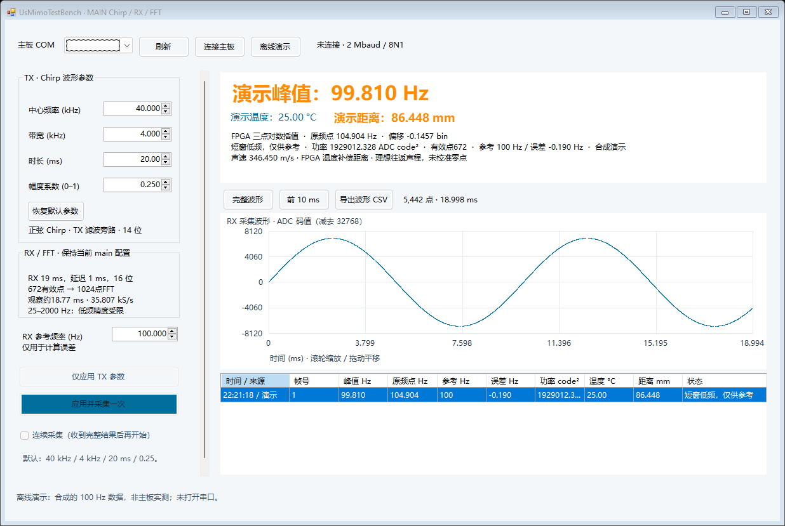

Main：温度与温度补偿距离
2026-10-21 · 基于当前工作副本，保留 165 MHz 系统时钟、19 ms RX、672/1024 FFT、25–2000 Hz 搜峰。
FPGA 完成温度有效性判断、声速补偿、拍频单位换算和距离计算；上位机显示结果并写入 CSV。
84 项时序检查通过，最小余量 0.044 ns，未约束的 setup/hold 路径为 0。
新增行为
- 波形仍按帧回传，随后发送 M4 报文；原有 M1/M2/M3 仍可被新版上位机读取。
- 每帧锁存 TMP117 温度、有效状态以及本次 Chirp 的带宽和时长。使用空气温度近似
c(θ)=331.3+0.606θ，FPGA 计算 R=c(θ) f_b T/(2B)。
- 温度以有符号 Q7 °C 发送，距离以无符号微米发送，界面显示毫米；单位步进不代表实板精度。
- 传感器未应答、最近读数超过 2 秒、温度超出器件范围，或 FFT/插值/参数无效时，显示相应原因并抑制有效距离。
- 零带宽单频模式无有效扫频斜率，因此不估算距离。极端参数超出 32 位微米范围时明确报溢出。
- 保留短窗低频提示；温度补偿不会排除谐波、串扰、多径或错误峰。

图片为标有“演示”的合成数据界面，未连接实板。
最小窗口布局。
验证
- 383 组实际 RTL 数值与独立整数参考逐项一致：多温度、频率、带宽和时长，以及无效、溢出情形。
- 温度守卫测试覆盖未读取、有效、锁存、超时、NACK、负温度、越界和复位；超时测试使用缩短计数器。
- 实际 TMP117 控制器与 I²C 从机模型验证地址 0x48、正负 Q7 温度、ACK/NACK、更新脉冲及引脚时序。原读取时钟约 645 kHz，现改为约 322 kHz，遵守器件 400 kHz 上限，并使用开漏 SDA 和末字节 NACK。
- M4 跨时钟握手、输入锁存、UART 背压和校验通过；实际 UART 逐位发送 110 字节，2 Mbaud。
- Main 顶层集成：21,770 个完整输入样本、5,442 点回传波形、672 点 FFT、M4 整包通过；采样间空闲周期压缩，TX/温度源建模。
- ADC SPI 短帧测试保留引脚时序与拒绝不完整 FFT 的检查；原有 FFT 数值回归使用 Intel RAM 模型通过。
- C# 8 组自测、真实 RTL 报文、实际 UART 字节、完整混合波形/M4 流、碎片接收和失效标记通过；正常/紧凑界面已目视检查。
- 完整 Quartus 编译通过，时序另逐项确认；为修正关键路径，自动触发周期乘法增加一级乘积寄存器；报文使用独热字节位置编码，缓存地址在同一流水级复制以降低扇出，缓存数据顺序与延迟保持不变。参数更新多一个系统时钟延迟。
| 温度 | RTL 拍频 | RTL 估算距离（B=4 kHz，T=20 ms） |
|---|
| -20 °C | 145.800 Hz | 116.341 mm |
| 20 °C | 145.800 Hz | 125.177 mm |
| 25 °C | 145.800 Hz | 126.281 mm |
全部检查 · 383 组 RTL 输出 · 输入与整数参考 · 实际逐位 UART 解码报文 · 源代码与复现证据
串口格式
M4,seq,count,bin,power,min,max,flags,span,delta,interp_status,nfft,temp_Q7,temp_status,frequency_mHz,distance_um,range_status,checksum\r\n
固定 110 字节，前 106 字节逐字节 XOR 校验；ASCII 字段为十六进制。温度读取 int16(temp_Q7)/128，
拍频读取 uint32(frequency_mHz)/1000 Hz，距离读取 uint32(distance_um)/1000 mm。
| 状态 | 含义 |
|---|
| temp_status 0 / 1 / 2 / 3 | 有效 / 无有效应答 / 过期 / 超器件温度范围 |
| range_status 0 / 1 / 2 / 3 / 4 / 5 | 算术有效 / FFT无效 / 温度无效 / Chirp参数无效 / 溢出 / 插值不可用 |
内部将 B 舍入到 milliHz、T 舍入到微秒、声速舍入到 mm/s；GUI 的参数步长更粗。
计算在既有 50 MHz FFT 时钟域，握手锁存输入后运算，结果保持到发送结束；只豁免这些已握手且保持稳定的 CDC 载荷路径。
上板使用
- 关闭旧上位机，用 Quartus Programmer 下载工作工程
02_RTL/V0/output_files/UsMimoTestBench.sof。
- 运行
03_SW/RunMain.cmd，选择主板 COM，按原有方式采集；界面会同时显示温度、峰值频率和估算距离。
- 先核对温度接近实际环境温度。无应答或过期时，按现有 TMP117 硬件检查传感器、地址、供电和 I²C；当前接口由原工程定义，未新增接线。
- 采用 38–42 kHz /20 ms，固定反射面位置检查频率与距离变化，再标定收发探头间距和系统零点。外部信号发生器直接输入低频时，只验证换算公式，不代表真实目标距离。
尚未验证实际传感器或重新上板声学精度。温度应代表声程附近空气；板上受热会带来偏差。
TMP117 数据手册 §6.7为 I²C 时序依据。公式为干空气近常温近似、理想往返声程估算，未自动补偿探头几何、系统延迟、湿度或错峰。
版本与回退
保存前的修改文件和当前输出将归档在 rollback_before_install.zip。
同级 original 备份未改；本次未提交或推送 Git。
SOF SHA-256: 61b24e01651a4613714a20d99fe9d244f5d8a76c51c66f6b75716a3a0ff9be70
UI SHA-256: ee1faa59fb74127ed86219f5c831cba0451e77830c9aa1f7ba08e5995317dc4d